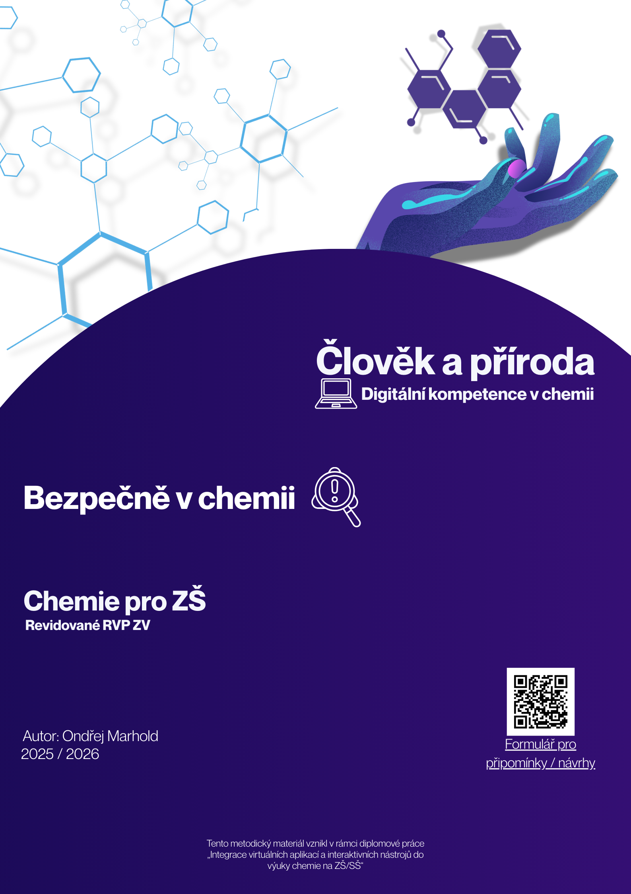

Bezpečně v chemii
Člověk a příroda, digitální kompetence v praxi


Znalost vlastností a rizik chemikálií je naprosto klíčová pro bezpečnou práci nejen ve školní laboratoři, ale i při běžném úklidu v domácnosti. Téma bezpečnosti a ochrany zdraví při práci (BOZP) a GHS symbolů však žáky často nebaví. Tento 45minutový výukový modul pro 8. ročník ZŠ a nižší ročníky víceletých gymnázií to řeší pomocí gamifikace - mění učivo v logickou a pohybovou "únikovou hru" s využitím interaktivních prvků.
Cíle a vazba na RVP
Modul propojuje chemii s rozvojem digitálních kompetencí (nová informatika). V chemii žáci hodnotí rizika práce s běžnými chemickými látkami a učí se s nimi bezpečně manipulovat. Z pohledu informatiky získávají data z digitálního prostředí a pracují se systémy pro skenování a interpretaci informací. Podle Bloomovy taxonomie úlohy gradují od prostého popisu nebezpečí až k hlubší analýze – například když žáci musí sami odvodit, jaký GHS symbol chybí na etiketě čisticího prostředku pouze na základě popisu jeho vlastností a H-vět.
Použitý nástroj: H5P a LumiEducation
Interaktivní části úkolů jsou vytvořeny pomocí nástroje H5P (HTML5 Package). Tento otevřený standard umožňuje tvořit bohatý obsah, jako jsou interaktivní kvízy či obrázky s hotspoty, bez nutnosti psát kód. Aby modul nevyžadoval po škole placený hosting ani LMS systém, byly moduly pro tuto hodinu vytvořeny pomocí bezplatného softwaru LumiEducation. Pro samotné žáky je práce opět naprosto bezbariérová – nevyžaduje žádné přihlášení, stačí pouze naskenovat QR kód.
Jak to funguje ve výuce (E-U-R)
- Evokace (5 min): Učitel ještě před hodinou rozmístí po třídě nebo chodbě 5 různých QR kódů. Hodinu zahajuje krátkou diskuzí nad jedním z GHS symbolů promítnutým na tabuli a následně představuje pravidla hry.
- Uvědomění (30–35 min): Žáci (ideálně ve dvojicích) pátrají po QR kódech. Po jejich naskenování se jim v mobilu otevře H5P modul s úkolem. Úkoly se postupně stávají náročnějšími. Například stanoviště 5 je koncipováno na excelentní úrovni obtížnosti a vyžaduje propojení poznatků o vlastnostech látek v domácnosti. Za každý splněný úkol získají žáci číselný kód. Získaná čísla nakonec musí dešifrovat pomocí triviální abecední substituce.
- Reflexe (6 min): Skupina, která odhalí skryté slovo, hru vyhrává. Následuje společná debata o tom, které stanoviště dělalo žákům největší problém a jaká chyba by byla v reálném životě nejnebezpečnější.
Materiály ke stažení a odkazy
Zde naleznete kompletní metodické listy, žákovské pracovní listy a odkazy na připravené interaktivní plochy.